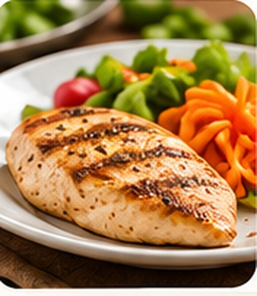
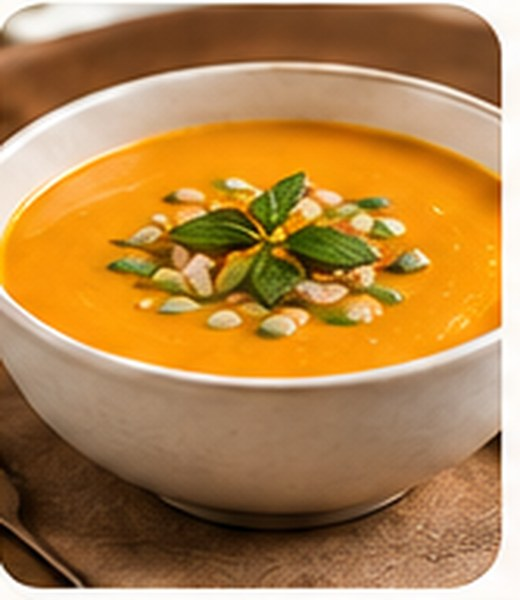

Mais informação
Ingredientes e alergênicos claramente identificados.
INCLUSÃO ALIMENTAR
Mais transparência, segurança e opções alimentares inclusivas em restaurantes, padarias e estabelecimentos similares. Porque nossas diferenças não deveriam nos impedir de compartilhar a mesma mesa.
Ingredientes e alergênicos claramente identificados.
Opções adequadas para diferentes necessidades alimentares.
Participação plena em eventos, viagens e refeições fora de casa.
Escolhas conscientes para uma alimentação sem riscos.
NOSSAS PROPOSTAS
Propostas encaminhadas ao Senado Federal pelo programa e-Cidadania. Acompanhe, participe e apoie diretamente.
CARDÁPIO INCLUSIVO · NOSSA CAUSA
É um cardápio que informa, de forma clara e acessível, os ingredientes, alergênicos presentes e adaptações possíveis, ajudando pessoas com alergias, intolerâncias e outras restrições alimentares a fazer escolhas mais informadas.
Ajuda a identificar ingredientes e riscos que precisam ser esclarecidos com o estabelecimento.
Permite consultar informações antes de decidir o que pedir.
Facilita a convivência de quem possui restrições alimentares.
Nosso foco são alergias, intolerâncias e condições de saúde que exigem cuidados alimentares. Um cardápio inclusivo não se resume a oferecer pratos vegetarianos ou veganos. Sem leite e derivados, sem lactose e sem glúten são declarações diferentes e exigem atenção ao preparo.
VEJA NA PRÁTICA
Marque o que precisa evitar e veja como as informações ajudam a analisar cada prato. Os produtos são fictícios.

Ingredientes: Frango, arroz, alface, cenoura, tomate, azeite, sal e ervas. Molho: contém ovos.
Adaptação possível: solicitar sem molho (sujeito à confirmação).

Ingredientes: Abóbora, frango desfiado, cebola, alho, azeite, sal e temperos naturais.
Adaptação possível: solicitar sem alho ou cebola.

Ingredientes: Cacau, farinha de arroz, açúcar, ovos, óleo vegetal e fermento.
Adaptação possível: versão sem ovos somente sob consulta.
Não há opções neste exemplo que atendam a todos os filtros selecionados. Consulte o estabelecimento sobre alternativas e preparo.
Atenção: os selos mostram somente ingredientes informados neste exemplo. Não comprovam ausência de contato cruzado, nem segurança para alergias graves ou doença celíaca. Antes de consumir, confirme ingredientes, utensílios e procedimentos com o estabelecimento. Sem glúten na receita não significa necessariamente seguro para celíacos.
INFORMAÇÃO COM RESPONSABILIDADE
Conheça as principais condições alimentares, seus impactos na saúde e na vida cotidiana, com base em fontes científicas confiáveis.
Nem toda restrição tem a mesma causa ou os mesmos riscos. Informação correta faz a diferença.
Reações do sistema imunológico que podem ser graves.
Podem causar sintomas cutâneos, gastrointestinais ou respiratórios, incluindo anafilaxia. Alguns casos exigem cuidado rigoroso com o contato cruzado.
Fonte: FDA — Alergias alimentares ↗Dificuldades para digerir determinados componentes.
Intolerância à lactose pode causar gases, cólicas e diarreia. Excluir laticínios sem substituição adequada também pode reduzir a ingestão de cálcio. Não é o mesmo que alergia.
Fonte: NIDDK — Intolerância à lactose ↗Condição autoimune que exige dieta rigorosa.
Na doença celíaca, o glúten desencadeia danos ao intestino delgado. Sem tratamento, pode haver anemia, má absorção e prejuízos à saúde óssea.
Fonte: NIDDK — Doença celíaca ↗Necessidades específicas que exigem atenção.
Algumas condições metabólicas e clínicas exigem cuidados com ingredientes, nutrientes e preparo. Cada caso precisa ser avaliado de forma específica.
Fonte: Ministério da Saúde ↗Conteúdo educativo geral, não substitui avaliação médica. Consulte as referências em cada condição. Revisão editorial inicial: outubro de 2026.
FALE COM A GENTE
Tem uma sugestão, quer propor uma parceria ou contribuir para uma alimentação mais inclusiva? Entre em contato com o movimento.
Para mensagens de consumidores, profissionais de saúde, entidades, estabelecimentos e representantes públicos.
inclusaoalimentar.contato@gmail.com
Enviar e-mailMovimento independente, sem vínculo institucional com o Senado Federal.